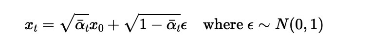
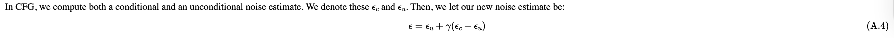
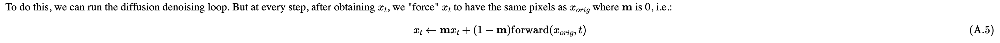
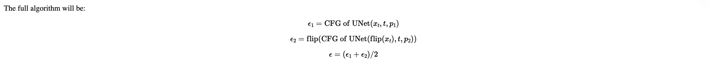
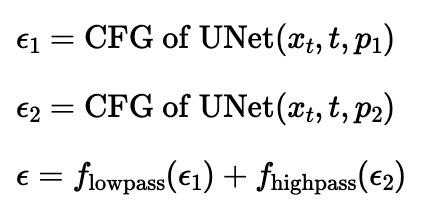

Part 0: Setup
prompts = ['a photo of a puppy', 'a photo of a cat', 'a photo of dog fighting a cat']
seed = 100
num_inference_steps = 6
num_inference_steps = 20
By comparing two inference steps: we can see longer inference step can produc image with more colors and details, we can see that by comparing the two cat image, num_inference_steps=6 produces really blur cat image while num_inference_steps=20 produce fine-detailed cat It takes longer to generate correct picture for complicated prompts like a photo of dog fighting a cat. With num_inference_steps=6, there is almost no signs of fighting and with num_inference_steps=20, we can the see the fighting but it is not a dog and a cat fighting.
Part 1: Sampling Loops
1.1 Implementing the Forward Process
Using above formula, I implemented noisy_im = forward(im, t) function

.png)
1.2 Classical Denoising
1.3 One-Step Denoising
1.4 Iterative Denoising
On the ith denoising step we are at t = strided_timesteps[i], and want to get to t = strided_timesteps[i+1] (from more noisy to less noisy).

Using above formula we can create function
def iterative_denoise(im_noisy, i_start, prompt_embeds, timesteps, display=True):
1.5 Diffusion Model Sampling

1.6 Classifier-Free Guidance (CFG)
Use above formula combine with iterative_denoise function from Q4, we can create function
def iterative_denoise_cfg
1.7 Image-to-image Translation
1.7.1 Editing Hand-Drawn and Web Images
Web Image

Hand-Drawn

1.7.2 Inpainting
Use above formula combine with def iterative_denoise_cfg to create inpaint function


1.7.3 Text-Conditional Image-to-image Translation
Prompt = a rocket ship
Prompt = a photo of mountains

Prompt = a photo of New York

1.8 Visual Anagrams
above algorithm plus iterative_denoise_cfg create visual_anagrams function

1.9 Hybrid Images
above algorithm plus iterative_denoise_cfg create make_hybrids function
Used Gaussian Blur to create lowpass, and subtract from lowpass to create high pass